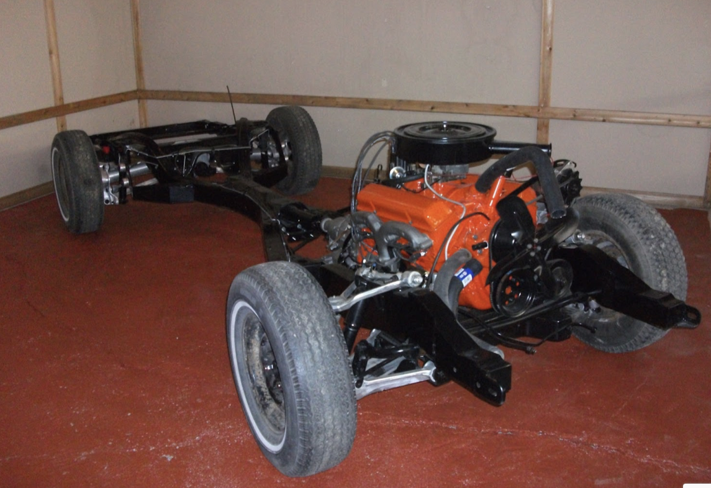
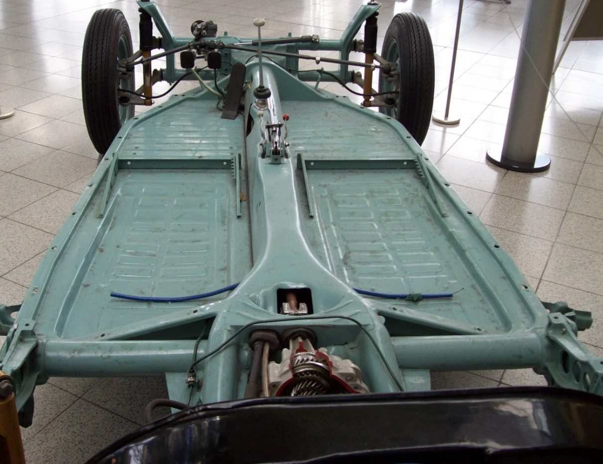

What is the frame?
Now the frame of the car is essentially your car's skeleton. It keeps the car's structural support intact and supports all of the car's mechanical components. Vehicle frame is also historically known as the chassis. For older cars, the chassis and what's known as the body and frame were separate. The chassis held the most important and heavy parts such as the engine and battery and the body on frame was the rest of the car where the wheels were connected. Nowadays however, unibody construction has become increasingly popular where the body in frame and the chassis are combined into one singular frame. Body in frame type car manufacturing is still used today, albeit mostly only in bigger vehicles such as busses and trucks. While this is less relevant now, there are multiple types of chassis for when they are separate. There is c shape, hat shape, and boxed shape. They derive these names from the shape of the chassis and how they manipulate its structural elements, the rails and beams. Also, these chassis are normally made of carbon steel, and sometimes aluminum alloy for lighter weight vehicles.
The different types of Frames
There are also many different types of car frames for the different styles of cars. We will only touch on a few important ones, but feel free to research on your own about some of the other types of frames if you would like to learn more.
- The Ladder Frame: The ladder frame is the oldest, simplest, and most used frame for separate frame/chassis cars.
- Backbone tube Chassis: This chassis is similar to the body on frame design of vehicles. it consists of a singular central, strong tubular backbone (usually rectangular in cross-section), that carries the power-train, and connects front and rear suspension attachment structures
- X Frame: The x frame ( later replaced by perimeter frame ) is the car frame of the all american cars made by general motors in the 1950’s and early 1960’s. This design aimed at making a taller vehicle regardless of many other aspects of the vehicle, it also ignored side rails and thus did not have sufficient collision protection. 
- Perimeter Frame: The perimeter frame, which replaced the x frame, allowed the floor-pan to be lowered, lowering the passengers' seating height and thereby reducing both the roof-line and overall vehicle height, as well as the center of gravity, thus improving handling and roadholding in passenger cars. This became the prevalent body on frame design in the United states but not in the rest of the world.
- Platform Frame: There is also the platform frame which is a modification of the perimeter frame. This frame allowed for more structural integrity and increased the overall strength of the car. The frame deisgn became popular in multiple europeon cars. 
- Unibody Frame: Vehicle structure has shifted from the traditional body-on-frame architecture to the lighter unitized / integrated body structure that is now used for most cars. This design provides weight savings, improved space utilization, and ease of manufacture below is an example of a unibody car frame